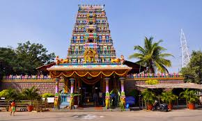

Peddamma Thalli Temple
Peddamma Thalli Temple is one of the most popular temples in Hyderabad, dedicated to the goddess Peddamma, an incarnation of Durga. The temple is especially busy during the Bonalu festival.
Location: Jubilee Hills, Hyderabad, Telangana, India
Ticket Price: Free entry
Transportation: Accessible by road, well-connected by local buses and taxis. Nearest metro station is Jubilee Hills Check Post.